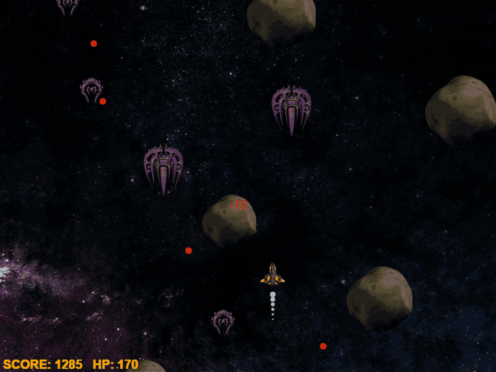

Check out Scry61, a collector's site for Magic enthusiasts, featuring an instantly searchable database of 16,796 cards and a companion deck-builder app.
View on Github
Scry1

Navigate the Gauntlet Run, facing down alien spaceships in an asteroid field.
View on Github
Gauntlet Run

Battle GemChess, my original chess engine written in Ruby. Go ahead—see if you can beat it!
View on Github
GemChess